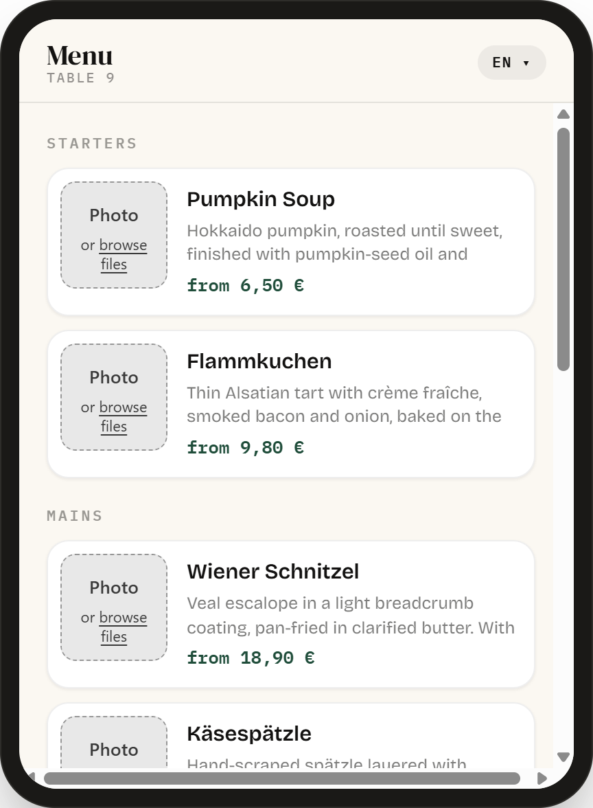
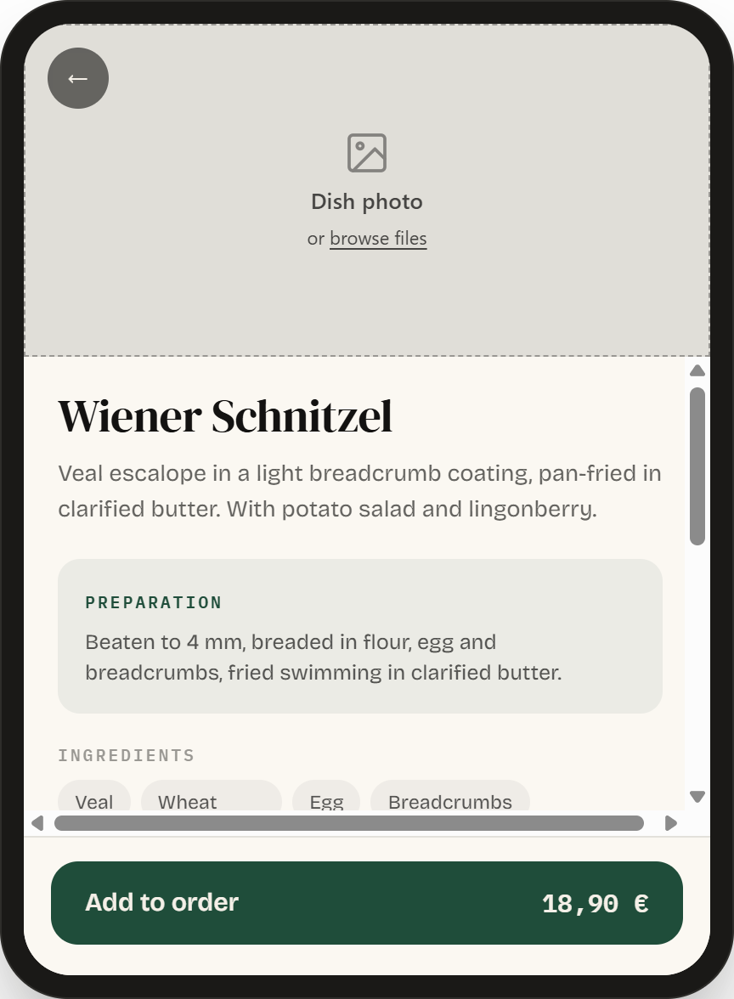
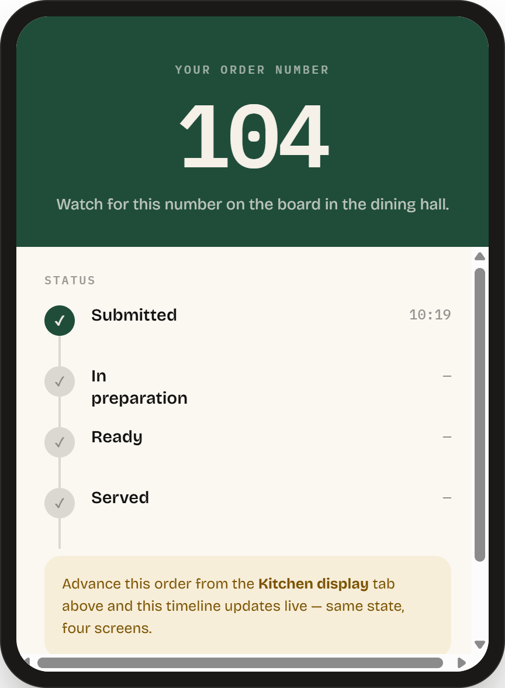
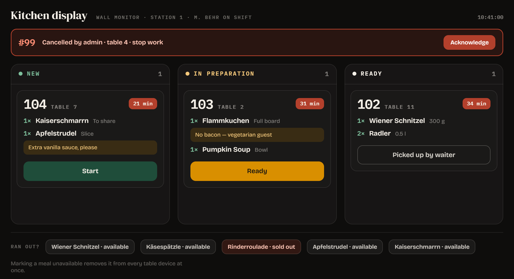
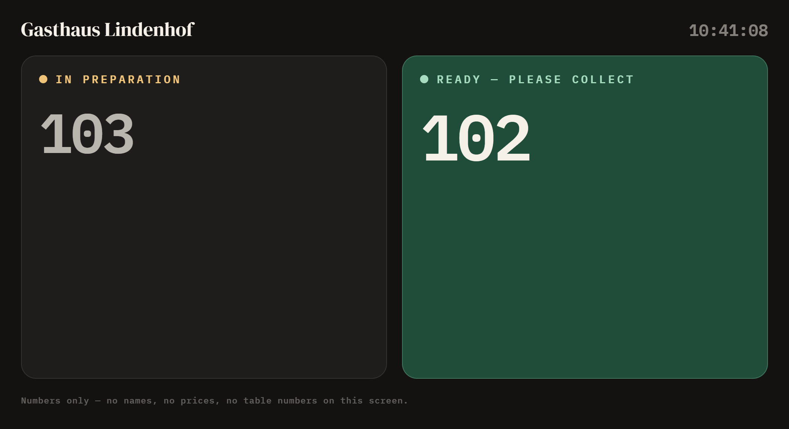
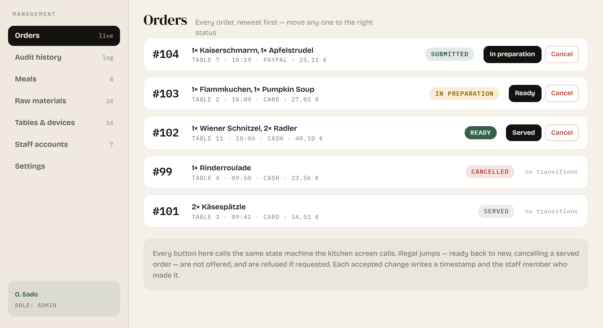

Guests order from a device at their table in German, English or Arabic. The kitchen and the dining hall see every order live.
Guest waits for a waiter
Waiter writes it down
Carries it to the kitchen
Returns to say it is ready
Every hand-off costs time and can lose detail. This project replaces the chain with four connected screens and one shared order state.
Language, menu, meal detail, cart, payment, order number with live status.
New, in preparation, ready. Number, table, items, notes, and a timer per order.
Order numbers only, in two large columns. No names, no prices.
Menu, raw materials, tables, staff, settings, and every order's status.
One order object, four views of it. Role-based access decides which screen a person may open.
A meal marked unavailable disappears from every table device at once.



Subtotal, tax and total are calculated on the server, never on the device, and verified again before the order is accepted.
Cash, card, PayPal or cash desk — whichever the restaurant has switched on in settings.
Issued on confirmation, shown large, and tracked through a live status timeline.
Start and Ready are the only actions a cook needs. Everything else on the card exists to answer one question: what goes on the plate.

No names, no prices, no table numbers. A guest needs one fact from this screen, and gets it in one glance.

Menu and recipes, tables and their paired devices, staff accounts by role, currency and tax, and full control over every order.

Labels and menu text are both translated, stored per language.
Arabic is a real RTL layout, not mirrored English.
Currency symbol, position and decimal format follow the language.
One place validates the transition, sets timestamps and writes the audit record. Nothing else may set a status.
Two tables confirming in the same instant must not get the same number — a locked transaction, not a counter.
The total shown to the guest is recalculated and verified before the order is accepted.
Title, size and price are copied onto the order line, so a price change tomorrow cannot rewrite yesterday's receipts.
Translated content stored per language, so a missing translation can be found and filled.
Each of the four screens exposes only what its user — admin, kitchen, waiter, cashier — is allowed to do.
An order placed on a phone appears on the kitchen screen within seconds, and its number moves across the hall board as the kitchen advances it — all three screens visible side by side.